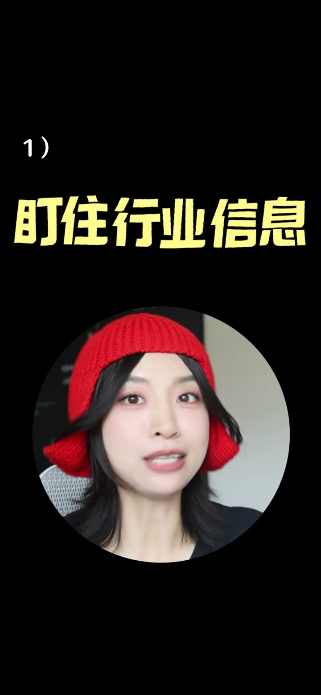
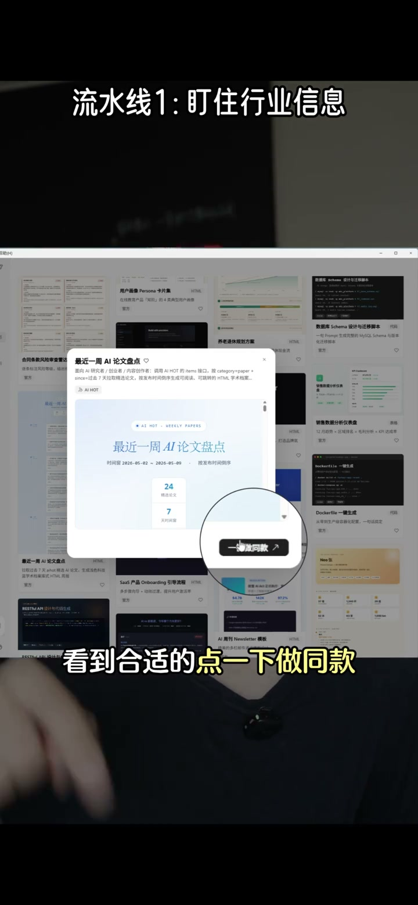
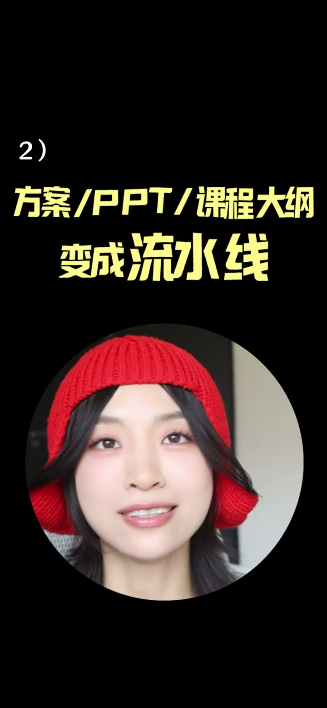
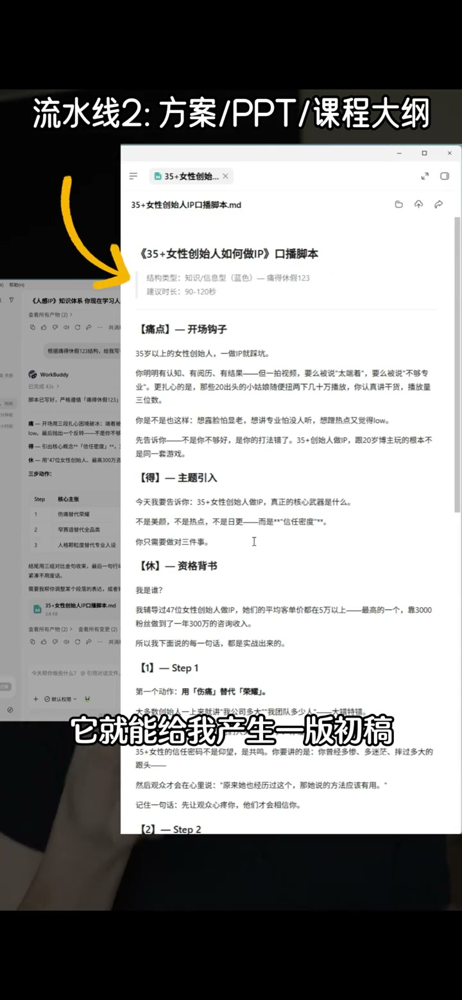

01
中文
你觉得上班和一人公司最大的区别是什么？
EN
What's the biggest difference between a job and a one-person company?
表达提示one-person company（一人公司）
Scene English · 效率 · 一人公司
One-Person Company: A High-Efficiency Assembly-Line SOP
🎧 语音讲解
Opening: what's the biggest difference bet…
情境一人公司要把重复劳动甩给工具。
你觉得上班和一人公司最大的区别是什么？
What's the biggest difference between a job and a one-person company?
表达提示one-person company（一人公司）
这些琐事它只会消耗我们的时间，不会给我们创造价值。
These chores only consume time; they create no value.
表达提示consume time（消耗时间）
把重复性的劳动甩给别人、甩给工具，把有限的精力放在重要的决策上面。
Offload repetitive work to tools and keep your energy for key decisions.
表达提示offload repetitive work（甩掉重复劳动）
one-person company（一人公司
consume time（消耗时间
Discovering Work Bot: today I'll break dow…
情境Work Bot的一键模板吸引了他。
我这个一人公司是怎么流水化运作的。
This is how my one-person company runs as an assembly line.
表达提示assembly line（流水化运作）
它上面有一个叫一键做爆款，我扫了一下就出来了一个办公模板。
It has a 'one-click viral creator'; scanning it gave me an office template.
表达提示one-click viral（一键做爆款）
assembly line（流水化运作
one-click viral（一键做爆款

Pipeline one: tracking industry info: my f…
情境AI定时扫描行业信息，模板生成选题库。
一人公司是没有人帮你搜集信息的，所有的决策都要依靠你自己的判断力。
Nobody gathers info for you—decisions rest on your own judgment.
表达提示rely on judgment（依靠判断力）
每天早上它会自动地扫描行业的动态、竞品的动向、热门的话题。
Every morning it scans industry dynamics, competitor moves, and hot topics.
表达提示scan the dynamics（扫描动态）
把它赛道的关键词填进去，它自动就能帮我生成一版选题库。
Fill in niche keywords and it generates a topic bank.
表达提示topic bank（选题库）
rely on judgment（依靠判断力
scan the dynamics（扫描动态

Pipeline two: turning proposals and outlin…
情境工作框架库把方案生成流水线化。
一人公司每一件事你都得自己做，而且你还得从零开始做。
In a one-person company you do everything yourself, from zero.
表达提示do it all（事事亲为）
我建立了一个自己的工作框架库，把我常用的一些结构、方案模板给它录进去。
I built a personal framework library of structures and templates.
表达提示framework library（框架库）
原本可能花几天时间才能够打磨出来的，现在就一天结束了。
What took days of polishing now finishes in a day.
表达提示days to a day（几天变一天）
do it all（事事亲为
framework library（框架库

Pipeline three: data review: my third pipe…
情境AI自动生成复盘报告指导方向。
做一人公司有一个动作非常重要，但大家经常会忽略，就是复盘。
A crucial, often-ignored habit in a one-person company is review.
表达提示review（复盘）
它会自动帮我生成一个复盘的报告。
It auto-generates a review report.
表达提示auto report（自动报告）
下个月我该往哪个方向使劲。
Where to push next month.
表达提示where to push（往哪使劲）
review（复盘
auto report（自动报告

Conclusion: Work Bot's greatest value for …
情境工具的价值是解放精力到高价值决策。
它最大的价值并不是它帮我写了多少字，而是它把我从重复性的劳动中给解放出来了。
Its value isn't the words it wrote—it's freeing me from repetitive labor.
表达提示freed from labor（解放劳动）
把有限的精力放在我最感兴趣的最需要动脑子的事情上。
Put limited energy into what I love and what needs thinking.
表达提示energy on thinking（精力放思考）
freed from labor（解放劳动
energy on thinking（精力放思考
说一人公司困境
说甩掉重复劳动
说盯行业信息
说工作框架库
说数据复盘
重复劳动要甩给工具。
判断力建立在信息质量上。
建框架库秒出初稿。
复盘决定下一步方向。
工具的价值是解放精力。